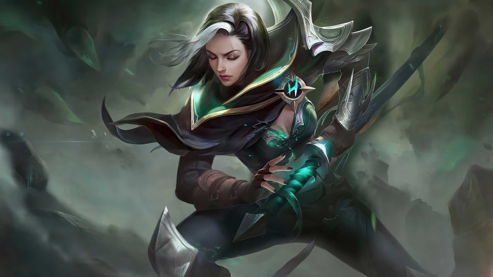
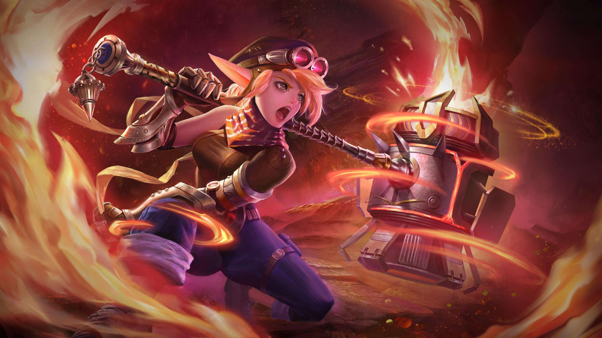
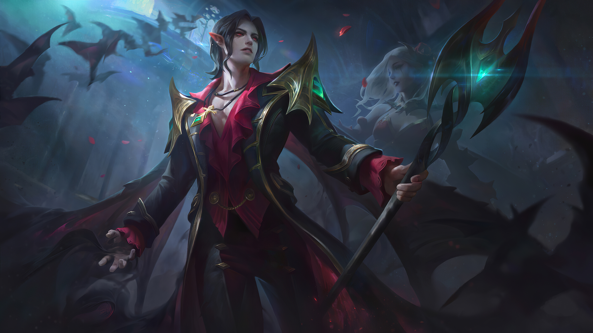

Benedetta
After the Abyss returned, our land becomes plagued and the entire southern part of the Land of Dawn turns into a barren place. Though the high Rantha Mountains blocks the corruption of the Abyss, Mother Nature in the southern realm continues to wither away. This once prosperous land is now nothing but a silent place filled with death, and people call it the “Despair Place”. The only passage that connects the Moniyan Empire is broken, separating the trapped refugees and the exiled wanderers from the rest of the world. They now live in fear and despair, haunted by monsters, yet still struggling to survive.
For these people, the name of Benedetta brings hope and a sense of security. This courageous, persevering female ranger leads a team and fights in the land south to the Rantha Mountains, protecting the scattered settlement set up by the last survivors in the Despair Place.

Lolita
Lolita was a gentle and tenacious half-elf girl. After she was rescued from the war and brought to Eruditio, she became a craftsman in the workshop. But she had an uncommon ambition: to join the Eruditio Rangers and fight like those who had rescued her. However, every battle proved to be overwhelming for her, because although she was a good fighter, she couldn't bear to hurt anyone. During an attack on the workshop, Lolita protected the Noumenon Energy Core with her body and was severely wounded. It was through this incident that her courage was acknowledged by the Eruditio Rangers, and they decided to take her in. Eventually, she understood that it didn't matter if one had destructive powers, because protecting too requires courage, and gentleness itself is also strength.
